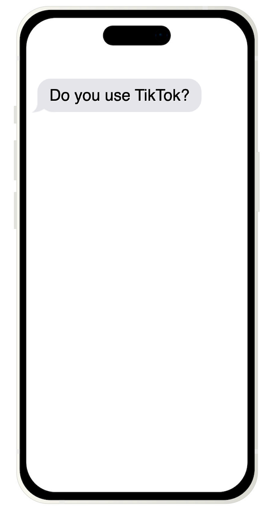
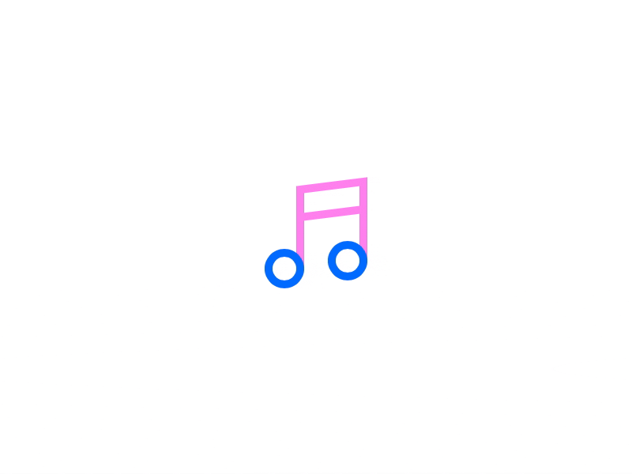

From Tiktok Trends to Playlist Picks
Exploring Musical Trends Across Spotify and TikTok
Soline Boussard, Michelle Hewson, Pluto Zhang
What is?
TikTok is a social media platform that has taken the world by storm.
Users can create, share, and discover short videos to distribute to others around the globe.
TikTokers express themselves through videos featuring lip-syncing, comedy skits, and dancing to soundtracks.
Its algorithm tailors the content to each users' preferences, contributing to its trendsetting nature.
@charlidamelio @dixiedamelio @marcdamelio @heididamelio dc @africanhoney ♬ original sound - Samantha Long
@bellapoarch To the 🐝 🐝 🐝 #fyp ♬ M to the B - Millie B
@juanpazurita Día 62. Ya estoy bailando en tiktok @paumtzurita @andymtzurita ♬ Blinding Lights - The Weeknd

TikTok dominated in 2022 as the most downloaded app on the market, accumulating over 800 million downloads.
This rise in popularity is a testament to TikTok's capability to shape current trends and culture.
Let's explore whether TikTok's immense popularity in 2022 influenced music trends during that period.
Explore the artists who dominated the TikTok and Spotify charts in 2022.
Hover over a bubble to learn more information about an artist.
Select a button to filter the artists.
Search for your favorite artist!
In 2022, the top music charts on Spotify and TikTok featured over 400 musical artists.
About 30% of these artists secured top-ranking songs on both platforms.
Each chart was mostly dominated by one-hit-wonders – artists who left their mark with just a single impactful release.
But among the many chart-topping artists and plentiful one-hit-wonders, a few truly stood out.
Who were these top artists that grabbed everyone's attention on Spotify and TikTok?
Let's take a closer look at the top artists on both platforms!
These artists hold the highest ranking across both platforms, showcasing their widespread influence in the music industry.
Hover over an artist to view and listen to their top tracks!
Now that we have explored the top artists that were featured on 2022's top charts, it's time to dive deeper into the songs themselves.

Songs on Spotify are characterized by various attributes that contribute to their individuality.
Hover over the icons to learn more.
How do these attributes contribute to a song's popularity in TikTok or Spotify?


Explore the distribution of attributes across both platforms.
Select a trait from the list of buttons to see the distribution of all songs across the scale of this trait.
Select the feature:
Investigate the possible relationships between attributes.
Select an attribute for the X and Y axes to examine the relationship between the songs on TikTok and Spotify.
Hover over a point to view the details of the song.
X Axis
Y Axis
How do the Top Songs Overlap?
Every song has a unique fingerprint.
Different values for different attributes allow us to see which types of songs make it into the top charts for Spotify vs TikTok.
Top Songs on Spotify Chart:
Top Songs on Tiktok Chart:
Playing with the Distribution of Keys Among Top Songs
In music theory, the key of a song is its central pitch. There are 12 keys that a song can be recorded in.
Each key represent 1 of the 12 pitches within an octave.
Try investigating the 12 key distribution of the top songs on Spotify and TikTok in 2022 by playing the piano!
While TikTok and Spotify songs have many similarities, slight variations in traits like energy, danceability, and tempo contribute to the unique identities of songs from each platform.
Tiktok songs tend to have high energy, high danceability, low acousticness, low liveness and low speechiness.
The majority of TikTok songs have a tempo of 120-130 whereas Spotify songs are more evenly distributed.
Tiktok's popularity erupted in 2022! This social media platform allowed artists to reach a new audience outside of Spotify listeners.
Our project explored the similarities and differences between artists and songs across these two platforms.
Even though the characteristics of songs on TikTok and Spotify were so similar, TikTok provided the unique opportunity for smaller artists to make a name for themselves.
We're excited to see how these trends continue in 2023!
Sources
Datasets Used:
TikTok's Popular Songs from 2022Spotify's Popular Songs from 2022
TikTok Global Downloads
Article Sources:
3 Billion Downloads on TikTokSpotify Track's Audio Features
TikTok's Influence on Music Industry
Visualization Resources:
Bubble Chart Reference Code Bubble Chart Simulation Reference CodeFade-in Text
Piano Sounds 1 Piano Sounds 2
Radar Plot Reference Code
Spotify Track Embeds TikTok Video Embeds Bouncing Icons Reference Code